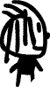

Nous allons essayer ici de créer un petit jeu à l'aide du logiciel Flash. Rien de mieux pour apprendre qu'un jeu n'est ce pas :) ? Il s'agira d'un labyrinthe, où l'on devra progresser sans toucher les murs.
Utiliser des fonctions comme hitTest et mouseUp (nous apprendrons ça très bientôt)
Pour résumer, vous devez simplement avoir Flash d'installé, et de savoir ce qu'est un clip dans ce logiciel.
C'est parti !
On est prêt, allez, on lance Flash, et on crée un nouveau document. Allez dans "modification/document" pour régler la taille que votre labyrinthe aura (CTRL + J), nous prendrons 500*500 (vous pouvez évidemment faire un document plus grand, moins carré, mais pensez aux petites résolutions 600*800, et où balader son bonhomme dans un labyrinthe, avec des ascenseurs, n'est pas forcément super pratique).
Laissez les autres options par défaut (voir image).
Commençons par un listing de ce dont nous allons avoir besoin pour faire ce labyrinthe, sans oublier que nous ne partirons pas dans des designs super beaux, ce sera à vous de fignoler ça après si vous le désirez !
Alors il nous faut :
Une zone de départ
Une zone d'arrivée
Le petit bonhomme
Les parois
La zone de départ
Elle sera un simple dessin, un D par exemple (oui, on va faire un design plutôt sobre ^^ ).
Mon "D" sera bleu, de taille 60 en Arial. N'oubliez pas de le faire en texte statique !
Faîtes attention à toujours mettre vos textes qui serviront au décors en mode statique.
Allez, hop un clic droit sur votre D, puis "convertir en symbole". Nous ferons ici un graphique qui se nommera "depart", on va pas non plus se fouler dans les noms :-° .
Pourquoi un graphique, et pas un clip ?
Il est préférable de faire un clip quand besoin est. Ici, c'est purement et simplement du décor, pas la peine de risquer de s'embrouiller donc ;) .
La zone d'arrivée
On va utiliser un clip cette fois-ci.
Ah, et pourquoi donc ?
Le but du labyrinthe étant d'arriver au bout (ben oui), nous ferons comprendre à Flash que le joueur a fini, grâce à une fonction qui détectera la collision entre le bonhomme et la zone d'arrivée.
Pour faire original, nous feront un F bleu, sur un fond jaune, ça fait un peu logo de super héros, c'est bien.
Le clip "arrivee"
Une fois encore, on sélectionne tout ça, un clic droit, et hop on convertit en symbole (clip donc cette fois-ci), qui lui s'appellera "arrivee".
Le bonhomme
Il s'agit ici du personnage que le joueur déplacera, pensez à ne pas le faire trop gros, qu'il puisse passer entre les murs sans les toucher. Nous le ferons encore une fois en symbole de type clip.
Donc ce clip, pensez à faire une p'tite animation, n'oubliez pas que c'est un bonhomme qui marche ; ce n'est bien sur pas obligatoire.

Les parois
Pour finir, on va faire des murs. Pour cela, nous allons faire un petit carré vert (sans contours, je vous expliquerai pourquoi plus tard). On le convertit en clip et on l'appelle "mur".
Voilà donc pour la bibliothèque, on est paré !
On installe le tout
On a fait une joli bibliothèque, maintenant, passons à la mise en place des objets de cette dernière.
On va commencer par placer la zone de départ, l'arrivée, et le bonhomme. Ce dernier sera placé n'importe où (on le placera à l'aide d'un procédé que vous verrez dans la partie code).
Vous devriez avoir quelque chose comme ça, peut-être en plus beau.
Je sais que la partie "code" est plus loin, mais nous allons commencer un peu ici, faîtes ce que je vous dis, même si vous ne comprenez pas tout, les explications viendront plus tard.
Cliquez donc sur votre bonhomme, et dans les propriétés, nommez le "bonhomme". Si vous êtes déjà perdu, basez vous sur l'image ci-dessous.
Insérez un nouveau calque nommé "parois". Insérez votre clip "mur" sur celui-ci, et à l'aide de l'outil de modification
, étirez-le de sorte qu'il fasse une limite sur la droite de votre scène.
N'hésitez pas à réellement bien dépasser, en maternelle c'était sans doutes votre rêve, réalisez-le ! Faites de même pour la hauteur.
Mais pourquoi en faite ?
Pour éviter de laisser une ligne blanche, ça fait pas beau :)
Pour une question d'esthétique, vous pouvez décider de mettre le calque "parois" au dessous ou au dessus de l'autre, ça ne changera rien au reste, juste s'il touche par exemple votre clip "arrivee" (c'est mon cas), vous pouvez préférer voir le logo en dessous des murs, ou au dessus.
Un peu de code
Pour gagner un bon bout de temps, nous allons mettre un tout petit peu de code.
Encore une fois, faites ça aveuglément, on reviendra sur une explication en temps voulu.
Commencez par afficher la fenêtre d'action si ce n'est pas déjà fait ("Fenêtre/action" ou CTRL + F9). Cliquez sur votre mur vert qui dépasse (j'insiste), et copiez ce code ActionScript dans la fenêtre d'action.
onClipEvent (enterFrame) {
if (_root.bonhomme.hitTest(this)) {
_root.touchelemur()
}
}
T'aurais pas une petite traduction ?
Mais si, alors :
Si le bonhomme touche ce mur, alors on lance la fonction "touchelemur". Nous n'avons pas encore définit cette fonction, c'est vrai, mais ça viendra. Le but de cette fonction sera de dire : "t'as perdu, allez on recommence".
Copier coller !
Pour finir avec la mise en place du labyrinthe, nous allons-copier coller le clip mur, le déformer, et faire notre labyrinthe.
Pour faire simple :
Vous avez mis un des murs du labyrinthe
Vous avez mis un script sur le mur qui fait comprendre à l'utilisateur qu'il perd s'il le touche
Vous dupliquez ce mur, donc le script avec
Avec votre clip carré vert, vous pouvez obtenir toutes sortes de parallélogrammes, donc faire pas mal de choses déjà. Et puisqu'il n'y a pas de bordures, vous pouvez chevaucher les clips entres eux sans soucis, ça ne se verra pas ;)
Tout est en place !
Vous avez fait une route parmi les murs ? Vous avez un début, une fin ? Un bonhomme ? Bon, tout est en place donc, passons au code !
Commençons par nous mettre d'accord sur les bases que nous avons :
Une bibliothèque avec 4 objets (depart, fin, mur et bonhomme)
Un document de 500*500 pixels avec une route délimitée par le clip mur dupliqué
Un script sur chaque mur qui fera "perdre" le joueur
Projet
Que veut on faire dans ce jeu ?
On veut...
Faire commencer le bonhomme sur le D de depart
Le déplacer à l'aide de la souris
L'amener au F de l'arrivée sans toucher les murs
Si l'on touche un mur, faire apparaître un message, et repositionner le bonhomme sur le D
On va...
Déplacer le bonhomme à l'aide des fonctions on(press) et startDrag();
Atteindre une image dès que le bonhomme est à la fin
A l'aide de la fonction hitTest vérifier si le bonhomme n'est pas en collision avec un mur auquel cas on fera apparaître un clip masqué avec un message et on replacera le bonhomme sur le D du départ
On attaque
Vous voilà prêt à taper du code ? Tant mieux.
On va commencer par ce qui est évidemment le principal, le déplacement du bonhomme.
T'as dit plus haut qu'on utiliserait un on(press) et un startDrag(); mais on(press), c'est pour les boutons non ?
Effectivement, et c'est pour ça que cette partie est la plus compliquée et tordue.
On peut déplacer un clip grâce à :
onClipEvent(mouseDown){
startDrag(_root.item);
}
Le problème avec ça, c'est que ça bougera l'objet, peut importe l'endroit où l'on clic (mouseDown = souris abaissée). Il faut donc trouver une solution alternative.
Bah, tu convertis ton clip bonhomme en bouton, et tu remplaces le onClipEvent(mouseDown) par un on(press), non ?
Non plus, puisque là les collisions entre les murs et le bonhomme ne marcheront plus (hitTest ne fonctionne qu'avec les clips). Il faut trouver autre chose...
aha... ?
Pas d'idée ? C'est pourtant tout bête :p . On fait un bouton, que l'on déplacera avec on(press), et le clip sera "aimanté" à ce bouton. Le seul truc, c'est que le bouton ne devra pas être visible (sinon c'est pas beau).
Si vous comprenez, mais pas complètement, faites de ce qui suit, et recommencez la lecture du paragraphe ci-dessus, ça paraîtra plus simple.
Un bouton invisible
Pour ne pas simplement faire l'animation sur le bouton, et supprimer le clip ?
Le test de collision ne peut se faire que sur le clip.
Créez votre bouton invisible, aux mêmes dimensions que votre bonhomme (logique), aidez-vous des informations disponibles dans les propriétés si besoin est.
Placez-le ensuite à l'endroit où vous voulez voir le bonhomme commencer et comme au tout début, donnez-lui un nom d'occurrence, ici ce sera "boutondeplacement".
On passe (enfin) au script
C'est parti !
Comme prévu, on commence par le déplacement du bonhomme (donc du bouton "boutondeplacement" qui fera déplacer le clip bonhomme).
On clic sur le bouton invisible, pour lui mettre le code suivant :
En faite, on peut mettre le bonhomme n'importe où, il ira là où le bouton est ?
Eh bien oui. Le clip bonhomme se met à l'emplacement du bouton ; ce dernier est invisible, on a donc l'impression de déplacer le clip (mais qu'est-ce que c'est malin ! :soleil: )
Traduction du code que nous venons de mettre :
Sur le bouton : quand on appuie sur le bouton, on déplace le bouton en même temps que la souris. Quand on lâche le bouton, on arrête de le déplacer.
Sur le clip : tout le temps, mettre le clip au même endroit que le bouton.
Voilà, le bonhomme peut se déplacer !
Quand on s'prend l'mur !
Il va falloir définir la fonction de tout à l'heure maintenant. Oui vous savez celle qui s'appelle "touchelemur()" et qui indique ce qu'il se passe quand un mur et le bonhomme entrent en collision.
Pour cela, cliquez sur une image clé (n'importe laquelle, tant qu'elle est en 1), et dans la fenêtre action, écrivez :
//création de la fonction nommée touchelemur
function touchelemur() {
_root.boutondeplacement._y = 380; // on envoie le bouton en 380 sur l'axe y
_root.boutondeplacement._x = 50; // pareil pour x
stopDrag(); // on fait stoper le drag pour qu'il n'y a pas de soucis
}
Si vous suivez bien, on déplace là le bouton, qui fera déplacer automatiquement le clip bonhomme >_ ...
On fait le point
Prenons quelques secondes pour constater ce qui marche pour le moment :
Le bonhomme se déplace
Si on touche un mur, on est renvoyé au début
Il reste donc à faire la partie finale :
Collision avec le clip "arrivee"
Alors, on va faire ça avec un hitTest() !
Pour la fin, on va faire un truc tout bête, on va afficher une image qui viendra par dessus les autres, avec un message expliquant que le joueur a gagné.
On commence par créer un nouveau calque, que l'on placera au dessus des autres. Puis nous placerons un nouveau clip sur celui-ci. Le clip devra être rempli, et faire 500*500 pixels.
Voilà, vous avez votre calque, donnez-lui un nom d'occurrence, moi j'ai choisi "message".
Ce qui déplacera le clip message par dessus le reste :) .
Voilà ! Votre jeu est fonctionnel ! Vous pouvez ajouter d'autres niveaux, il vous suffit de mettre chaque niveau dans un clip, et de les déplacer chacun leur tour dans la zone de travail. Vous pouvez aussi bien sur mettre un peu de design là dedans, on a fait un truc plutot pas beau nous :-° . (ou moi en tous cas)
Vous pouvez aussi faire des murs qui bougent, un chronomètre, votre bonhomme qui saute de joie quand il finit... Mais ça vous demandera quelques connaissances supplémentaires, et on ne verra pas ça tout de suite, mais je vous rassure, c'est vraiment pas plus compliqué que ce tuto là ;) .
Le forum et moi même sommes disponibles en cas de soucis.

{kind=link}
{kind=link}